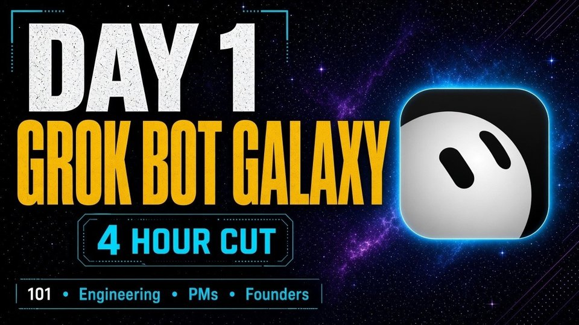

2026 · Grok Bot Galaxy
3日で会社を作る・初日 ボットのチームで期間限定レストランを開けるか
Company build, day 1: Could a team of bots run a pop-up?

見どころと解説
Lauren、Matt Palmer、Roshan Sadanani の3人が、3日で会社を立ち上げる実験に挑む。最初の案は期間限定レストランだ。スタジオでの相談から最初の申込ページができるまでを追うと、ボットは会話が続く間にも候補地を調べ、参加希望者の名前を集め、試作品を形にできることが分かる。一方、会場の持ち主、営業許可を出す側、お金を払って来てくれるお客さんには、それぞれの都合がある。実際に店を開けるかを左右するのは、ページを作る速さを超えたところにある。
以下のタイムスタンプは、YouTube の編集版でローレンが共同制作に参加している場面を示します。主催者が X で公開している全編の録画とは再生位置が異なります。